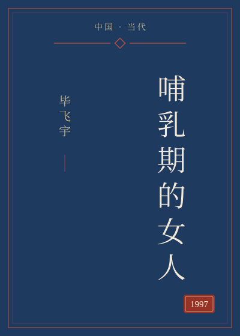
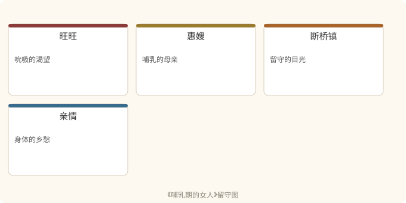

哺乳期的女人
一、基本信息
| 作者 | 毕飞宇 |
|---|---|
| 成书/出版 | 发表年份待核（中国作家网 C022：短篇列表'《哺乳期的女人》《地球上的王家庄》'） 汪政：毕飞宇的目光（中国作家网）（官方文学机构） |
| 国别/地区 | 中国 |
| 时代 | 现当代 · 当代 |
| 体裁 | 短篇小说 |
| 语言 | 汉语（白话） |

《哺乳期的女人》留守图（主题·结构图）
二、创作背景
中国作家网（C022）：短篇列表'《哺乳期的女人》《地球上的王家庄》'；'现在看来也可以说是关注留守老人与儿童的作品'（C022 评述）。
首奖（通说待核）：1997年首届鲁迅文学奖短篇小说奖。
三、内容脉络
断桥镇：七岁的旺旺吮吸惠嫂的乳汁——留守儿童的'哺乳'渴望（通说待核）。
四、主要人物表
| 人物 | 身份 | 说明 |
|---|---|---|
| 旺旺 | 留守儿童 | （通说待核） |
| 惠嫂 | 哺乳期母亲 | （通说待核） |
五、主题与艺术特点
- 留守儿童（C022：'关注留守老人与儿童'）。
- '哺乳'的象征：身体与亲情（通说待核）。
- 小镇的目光与羞耻（通说）。
六、影响与评论
- 中国作家网：'现在看来也可以说是关注留守老人与儿童的作品'（C022）。
汪政：毕飞宇的目光（中国作家网）（官方文学机构） - 中国作家网：毕飞宇获鲁迅文学奖（C022 作者级）。
汪政：毕飞宇的目光（中国作家网）（官方文学机构）
七、阅读建议
难点
- '哺乳'意象的伦理。
- 乡镇目光的社会学。
- 《哺乳期的女人》（收于毕飞宇小说集，通说待核）。
先《青衣》后本作。
八、待核实
- 首刊（《作家》1997年说）与鲁迅文学奖首届核对。
- 旺旺/惠嫂人名核对。
- 断桥镇地名待核。
本页主要来源
毕飞宇的其他收录作品：推拿